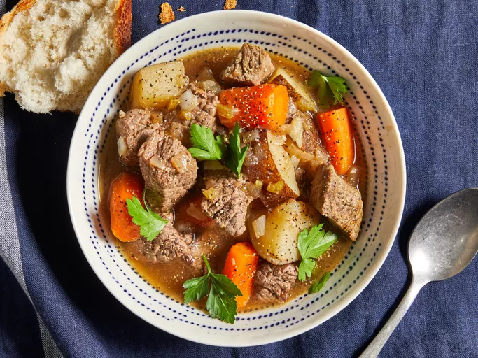

This easy slow cooker beef stew recipe made with potatoes, carrots, celery, broth, herbs, and spices is hearty and comforting. You won't be slow to say 'yum'!
Hearty potatoes, carrots, celery, and beef create an easy yet comforting meal.
Home cooks love the thick texture for feeding families with plenty to go around.
Gather all the ingredients
Place beef in the slow cooker.
Mix flour, salt, and pepper together in a small bowl; pour over beef and stir until coated.
Add beef broth, carrots, potatoes, onion, celery, Worcestershire sauce, paprika, garlic, and bay leave; stir to combine.
Cover, and cook until beef is tender enough to cut with a spoon, on Low for 8 to 12 hours, or on High for 4 to 6 hours.
Serve hot and enjoy!